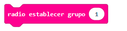
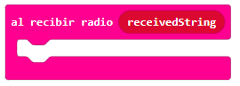
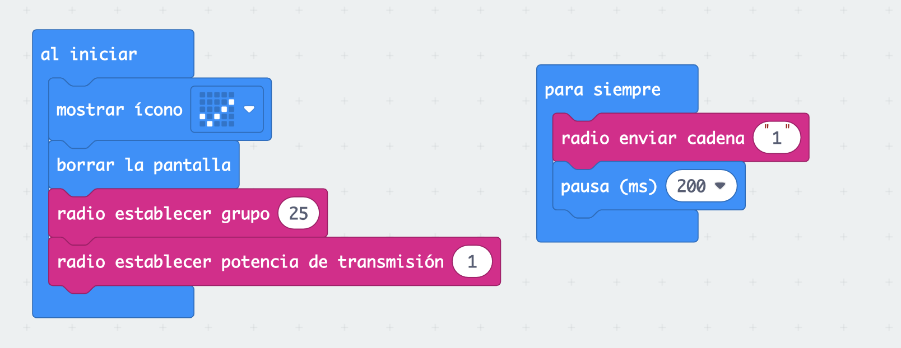
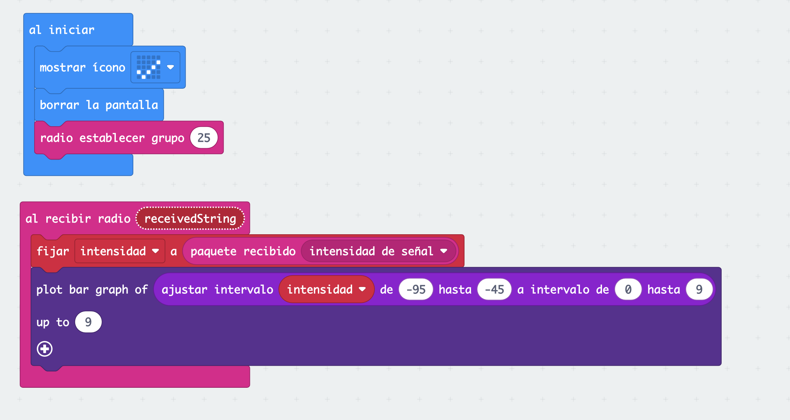

Enviando mensajes de una micro:bit a otra

¡Nuestras placas pueden comunicarse entre ellas! Necesitaremos dos placas micro:bit y dos programas diferentes para nuestra búsqueda del tesoro. Vamos a crear un programa usando la función radio para comunicarse entre ellas. Una de las placas será la baliza que transmitirá una señal cada pocos segundos a baja potencia. Otra de las placas será el receptor.
La placa receptora recibirá la variable intensidad y visualizará mayor número de LEDs al acercarse a la baliza. Las señales de radio se vuelven más fuertes cuanto más cerca está el transmisor.
Usa el bloque matemático "ajustar intervalo" para asignar a la intensidad de señal de radio, que va de -95 (débil) a -42 (fuerte), números en el rango de 0 a 9 que son utilizados para dibujar un gráfico de barras.

- Entorno de programación por bloques MakeCode https://makecode.microbit.org/
- Matriz de led.
- Uso "plot bar graph"
- Entradas: pulsador A y B
- Función de radio.
- Envío y recepción de mensajes "cadena".
- Trabajo cooperativo y juego grupal.
|
 |
 |

Programa de baliza

Programa receptor

Enlace al código del proyecto https://makecode.microbit.org/_59YKj3dyiDHt